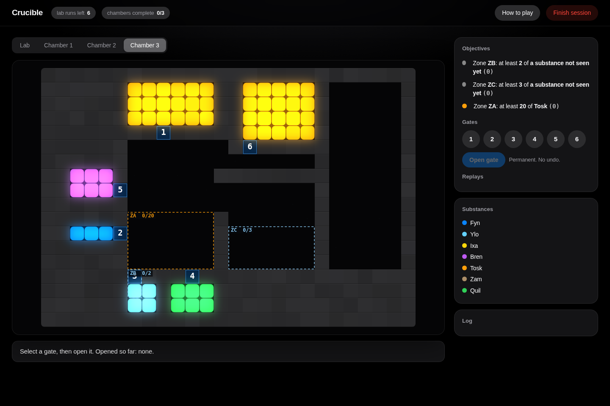

Crucible.
Agents learn the rules. Then they destroy their own way out.
Space to start · N for notes
Open a gate.
Forever.
Seven unknown substances. Six experiments. Three chambers. No undo.

376 → 0
One opening. Real trial, GPT-6.1 Sol.
Left: the agent. Right: our reference.
Who did well.
Twelve agent trials. Zero facilities completed.
00.250.50.751.0
Take away the rehearsal.
9 experiments
0.00
Same model. It rehearses, and wins.
6 experiments
0.00
All our reference needs. It has to plan.
Try to break it.
0.00
Hostile agent forging the reward, inside the real task.
0
Agent trials through Harbor. Every log is in the repo.
1
scripts/verify.sh